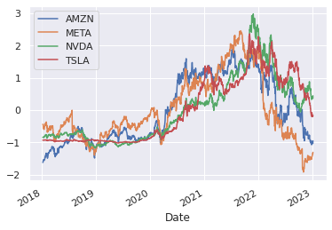
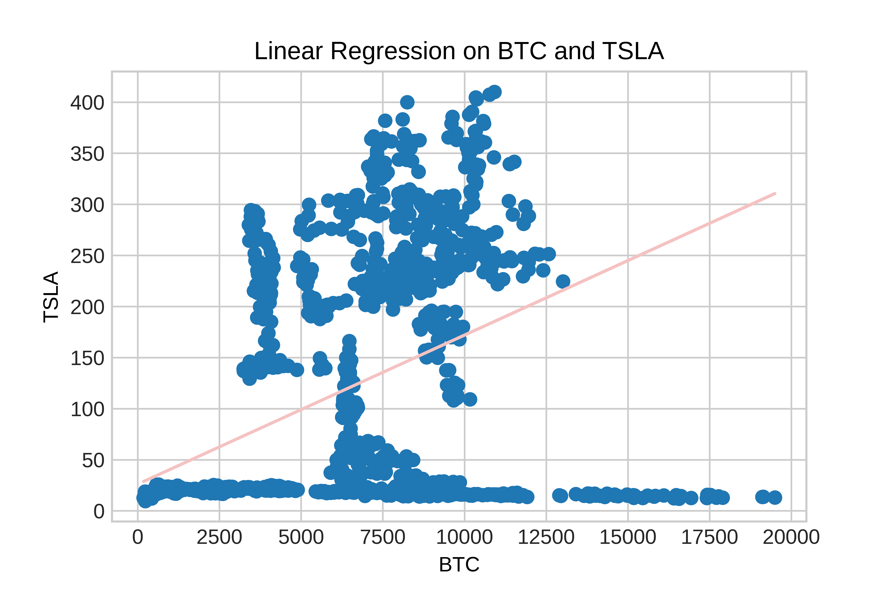

the first task was to embed two charts onto my homepage
The first chart tracks GBPUSD.
The second chart compares borrowing costs in the UK and the US
the second task was to replicate a chart from the FT and improve it
The riskiest year was 1984 as it has the highest lending to GDP ratio as show in chart 4.
The third task was to add two more charts whereby, the second has improved visual encoding
The visual encoding was changed from a stacked bar to a line chart as this makes it easier to compare data point values.
Implimenting a data scraper of my own
I chose this website because the data was clearly formatted and the site did not prevent me from scraping the data.
To access the code behind the scraper, click here.
The fifth task was to use the ONS API to batch download nine different series as JSON files whose data can be used to create a series of related charts
To access the code for these charts, click here.
My choropleth map shows the unemployment rate across countries in South America whereby the darker the colour, the higher the unemployment.
John Turner and Will Quinn outlined the idea that the cryptocurrency space has been a growing bubble which finally popped last year with the notable collapse of FTX.
The charts show the price of BTC and FTT (FTX’s Token) and the prices clearly reflect a speculative rise and fall, as is typically the case in financial bubbles.
I wanted to predict stock price data of NVDA, TSLA, AMZN and META.
I wanted to perform a linear regression of BTC against TSLA. The relationship was weak with a score of 0.3.
